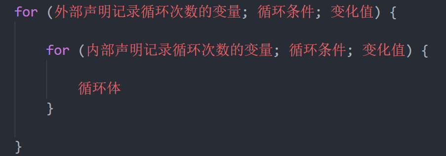
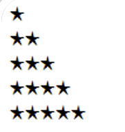
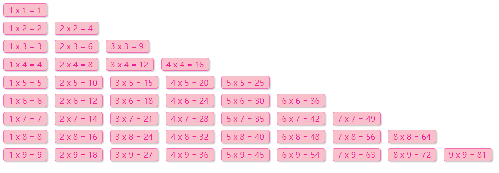
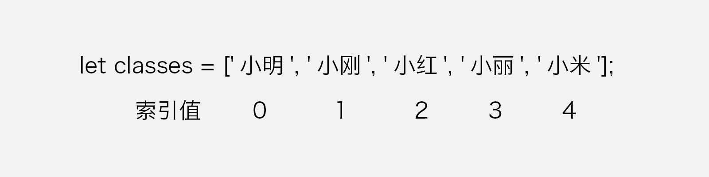
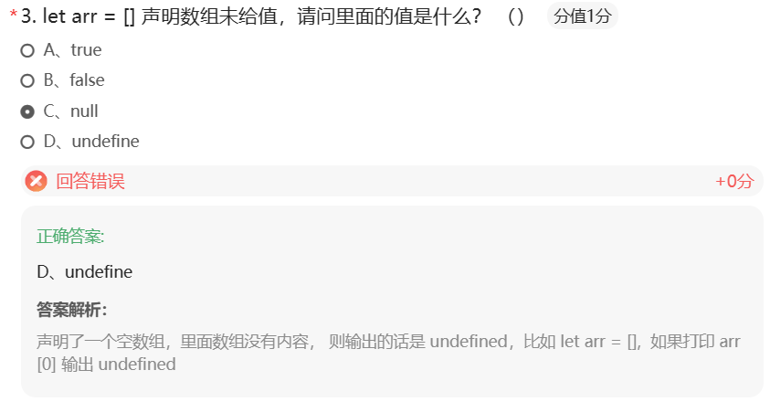
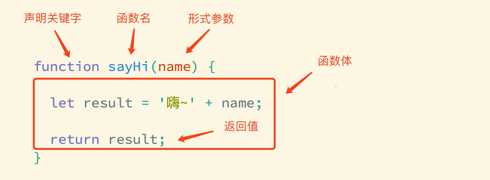
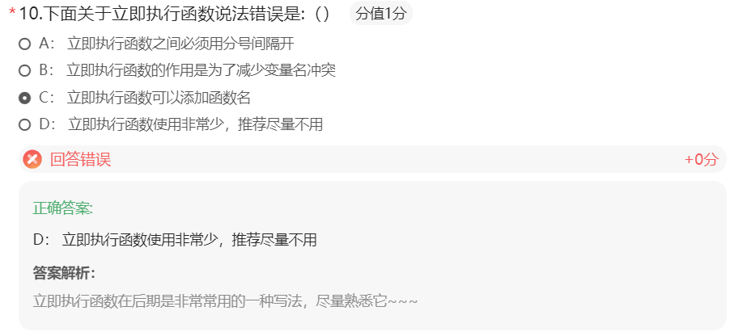

本系列：（一）JavaScript基础 第1-2天 · （二）JavaScript基础 第3-5天 · （三）Web APIs 第1-3天 · （四）Web APIs 第4-6天与个人实战
JavaScript 基础- 第3天笔记
if 多分支语句和 switch的区别：
共同点
都能实现多分支选择， 多选1
大部分情况下可以互换
区别：
switch…case语句通常处理case为比较确定值 的情况，而if…else…语句更加灵活，通常用于范围判断 (大于，等于某个范围)。
switch 语句进行判断后直接执行到程序的语句，效率更高，而if…else语句有几种判断条件，就得判断多少次
switch 一定要注意 必须是 === 全等，一定注意 数据类型，同时注意break否则会有穿透效果
结论：
当分支比较少时，if…else语句执行效率高。
当分支比较多时，switch语句执行效率高，而且结构更清晰。
for 语句
掌握 for 循环语句，让程序具备重复执行能力
for 是 JavaScript 提供的另一种循环控制的话句，它和 while 只是语法上存在差异。
for语句的基本使用
实现循环的 3 要素
1 2 3 4 5 6 7 8 9 10 11 12 13 14 <script > for (let i = 1 ; i <= 6 ; i++) { document .write (`<h${i} >循环控制，即重复执行<h${i} >` ) } </script >
变化量和死循环，for 循环和 while 一样，如果不合理设置增量和终止条件，便会产生死循环。
跳出和终止循环
1 2 3 4 5 6 7 8 9 10 11 12 13 14 15 16 <script > for (let i = 1 ; i <= 5 ; i++) { if (i === 3 ) { continue } console .log (i) } for (let i = 1 ; i <= 5 ; i++) { if (i === 3 ) { break } console .log (i) } </script >
结论：
JavaScript 提供了多种语句来实现循环控制，但无论使用哪种语句都离不开循环的3个特征，即起始值、变化量、终止条件，做为初学者应着重体会这3个特征，不必过多纠结三种语句的区别。起始值、变化量、终止条件，由开发者根据逻辑需要进行设计，规避死循环的发生。
当如果明确了循环的次数的时候推荐使用for循环,当不明确循环的次数的时候推荐使用while循环
注意：for 的语法结构更简洁，故 for 循环的使用频次会更多。
循环嵌套
利用循环的知识来对比一个简单的天文知识，我们知道地球在自转的同时也在围绕太阳公转，如果把自转和公转都看成是循环的话，就相当于是循环中又嵌套了另一个循环。
实际上 JavaScript 中任何一种循环语句都支持循环的嵌套，如下代码所示：

1 2 3 4 5 6 7 8 // 1. 外面的循环 记录第n天 for (let i = 1; i < 4; i++) { document.write(`第${i}天 <br > `) // 2. 里层的循环记录 几个单词 for (let j = 1; j < 6; j++) { document.write(`记住第${j}个单词<br > `) } }
记住，外层循环循环一次，里层循环循环全部
倒三角
1 2 3 4 5 6 7 8 for (let i = 1 ; i <= 5 ; i++) { for (let j = 1 ; j <= i; j++) { document .write ('★' ) } document .write ('<br>' ) }

九九乘法表
样式css
1 2 3 4 5 6 7 8 9 10 11 12 span { display : inline-block; width : 100px ; padding : 5px 10px ; border : 1px solid pink; margin : 2px ; border-radius : 5px ; box-shadow : 2px 2px 2px rgba (255 , 192 , 203 , .4 ); background-color : rgba (255 , 192 , 203 , .1 ); text-align : center; color : hotpink; }
javascript
1 2 3 4 5 6 7 8 9 10 11 for (let i = 1 ; i <= 9 ; i++) { for (let j = 1 ; j <= i; j++) { document .write (` <div> ${j} x ${i} = ${j * i} </div> ` ) } document .write ('<br>' ) }

数组
知道什么是数组及其应用的场景，掌握数组声明及访问的语法。
数组是什么？
数组： (Array)是一种可以按顺序保存数据的数据类型
使用场景： 如果有多个数据可以用数组保存起来，然后放到一个变量中，管理非常方便
数组的基本使用
定义数组和数组单元
1 2 3 4 5 6 7 8 <script > let classes = ['小明' , '小刚' , '小红' , '小丽' , '小米' ] </script >
通过 [] 定义数组，数据中可以存放真正的数据，如小明、小刚、小红等这些都是数组中的数据，我们这些数据称为数组单元，数组单元之间使用英文逗号分隔。
访问数组和数组索引
使用数组存放数据并不是最终目的，关键是能够随时的访问到数组中的数据（单元）。其实 JavaScript 为数组中的每一个数据单元都编了号，通过数据单元在数组中的编号便可以轻松访问到数组中的数据单元了。
我们将数据单元在数组中的编号称为索引值，也有人称其为下标。
索引值实际是按着数据单元在数组中的位置依次排列的，注意是从 0 开始的，如下图所示：

观察上图可以数据单元【小明】对应的索引值为【0】，数据单元【小红】对应的索引值为【2】
1 2 3 4 5 6 7 8 9 10 11 12 13 14 <script > let classes = ['小明' , '小刚' , '小红' , '小丽' , '小米' ] document .write (classes[0 ]) document .write (classes[1 ]) document .write (classes[4 ]) document .write (classes[3 ]) classes[3 ] = '小小丽' document .wirte (classes[3 ]); </script >
数据单元值类型
数组做为数据的集合，它的单元值可以是任意数据类型
1 2 3 4 5 6 7 8 9 10 <script > let list = ['HTML' , 'CSS' , 'JavaScript' ] let scores = [78 , 84 , 70 , 62 , 75 ] let mixin = [true , 1 , false , 'hello' ] </script >
数组长度属性
重申一次，数组在 JavaScript 中并不是新的数据类型，它属于对象类型。
1 2 3 4 5 6 <script > let arr = ['html' , 'css' , 'javascript' ] console .log (arr.length ) </script >
操作数组
数组做为对象数据类型，不但有 length 属性可以使用，还提供了许多方法：
push 动态向数组的尾部添加一个单元
unshift 动态向数组头部添加一个单元
pop 删除最后一个单元
shift 删除第一个单元
splice 动态删除任意单元
使用以上4个方法时，都是直接在原数组上进行操作，即成功调任何一个方法，原数组都跟着发生相应的改变。并且在添加或删除单元时 length 并不会发生错乱。
1 2 3 4 5 6 7 8 9 10 11 12 13 14 15 16 17 18 19 20 21 22 23 24 25 <script > let arr = ['html' , 'css' , 'javascript' ] arr.push ('Nodejs' ) console .log (arr) arr.push ('Vue' ) arr.unshift ('VS Code' ) console .log (arr) arr.splice (2 , 1 ) console .log (arr) arr.pop () console .log (arr) arr.shift () console .log (arr) </script >
作业错题

JavaScript 基础 - 第4天笔记
理解封装的意义，能够通过函数的声明实现逻辑的封装，知道对象数据类型的特征，结合数学对象实现简单计算功能。
理解函数的封装的特征
掌握函数声明的语法
理解什么是函数的返回值
知道并能使用常见的内置函数
函数
理解函数的封装特性，掌握函数的语法规则
声明和调用
函数可以把具有相同或相似逻辑的代码“包裹”起来，通过函数调用执行这些被“包裹”的代码逻辑，这么做的优势是有利于精简代码方便复用。
声明（定义）
声明（定义）一个完整函数包括关键字、函数名、形式参数、函数体、返回值5个部分

调用
声明（定义）的函数必须调用才会真正被执行，使用 () 调用函数。
1 2 3 4 5 6 7 8 9 10 11 12 13 14 15 16 17 18 19 20 21 <!DOCTYPE html > <html lang ="en" > <head > <meta charset ="UTF-8" > <title > JavaScript 基础 - 声明和调用</title > </head > <body > <script > function sayHi ( console .log ('嗨~' ) } sayHi () sayHi () </script > </body > </html >
注：函数名的命名规则与变量是一致的，并且尽量保证函数名的语义。
小案例： 小星星
1 2 3 4 5 6 7 8 9 10 11 12 13 14 15 16 17 18 19 20 21 <script> function sayHi ( document .write (`*<br>` ) document .write (`**<br>` ) document .write (`***<br>` ) document .write (`****<br>` ) document .write (`*****<br>` ) document .write (`******<br>` ) document .write (`*******<br>` ) document .write (`********<br>` ) document .write (`*********<br>` ) } sayHi () sayHi () sayHi () sayHi () sayHi () </script>
参数
通过向函数传递参数，可以让函数更加灵活多变，参数可以理解成是一个变量。
声明（定义）一个功能为打招呼的函数
传入数据列表
声明这个函数需要传入几个数据
多个数据用逗号隔开
1 2 3 4 5 6 7 8 9 10 11 12 13 14 15 16 17 18 19 20 21 22 23 24 25 26 27 28 29 30 31 32 33 34 35 <!DOCTYPE html > <html lang ="en" > <head > <meta charset ="UTF-8" > <title > JavaScript 基础 - 函数参数</title > </head > <body > <script > function sayHi (name ) { console .log (name) console .log ('嗨~' + name) } sayHi ('小明' ) sayHi ('小红' ) </script > </body > </html >
总结：
声明（定义）函数时的形参没有数量限制，当有多个形参时使用 , 分隔
调用函数传递的实参要与形参的顺序一致
形参和实参
形参：声明函数时写在函数名右边小括号里的叫形参（形式上的参数）
实参：调用函数时写在函数名右边小括号里的叫实参（实际上的参数）
形参可以理解为是在这个函数内声明的变量（比如 num1 = 10）实参可以理解为是给这个变量赋值
开发中尽量保持形参和实参个数一致
1 2 3 4 5 6 7 8 9 10 11 12 13 14 15 16 17 18 19 20 <!DOCTYPE html > <html lang ="en" > <head > <meta charset ="UTF-8" > <title > JavaScript 基础 - 函数参数</title > </head > <body > <script > function count (x, y ) { console .log (x + y); } count (10 , 5 ); </script > </body > </html >
返回值
函数的本质是封装（包裹），函数体内的逻辑执行完毕后，函数外部如何获得函数内部的执行结果呢？要想获得函数内部逻辑的执行结果，需要通过 return 这个关键字，将内部执行结果传递到函数外部，这个被传递到外部的结果就是返回值。
1 2 3 4 5 6 7 8 9 10 11 12 13 14 15 16 17 18 19 20 21 22 23 <!DOCTYPE html > <html lang ="en" > <head > <meta charset ="UTF-8" > <title > JavaScript 基础 - 函数返回值</title > </head > <body > <script > function count (a, b ) { let s = a + b return s } let total = count (5 , 12 ) </script > </body > </html >
总结：
在函数体中使用return 关键字能将内部的执行结果交给函数外部使用
函数内部只能出现1 次 return，并且 return 下一行代码不会再被执行，所以return 后面的数据不要换行写
return会立即结束当前函数
函数可以没有return，这种情况默认返回值为 undefined
作用域
通常来说，一段程序代码中所用到的名字并不总是有效和可用的，而限定这个名字的可用性的代码范围就是这个名字的作用域。
作用域的使用提高了程序逻辑的局部性，增强了程序的可靠性，减少了名字冲突。
全局作用域
作用于所有代码执行的环境(整个 script 标签内部)或者一个独立的 js 文件
处于全局作用域内的变量，称为全局变量
局部作用域
作用于函数内的代码环境，就是局部作用域。 因为跟函数有关系，所以也称为函数作用域。
处于局部作用域内的变量称为局部变量
如果函数内部，变量没有声明，直接赋值，也当全局变量看，但是强烈不推荐
但是有一种情况，函数内部的形参可以看做是局部变量。
匿名函数
函数可以分为具名函数和匿名函数
匿名函数：没有名字的函数,无法直接使用。
函数表达式
1 2 3 4 5 6 let fn = function ( console .log ('函数表达式' ) } fn ()
立即执行函数
1 2 (function ( (function (
无需调用，立即执行，其实本质已经调用了
多个立即执行函数之间用分号隔开
在能够访问到的情况下 先局部 局部没有在找全局
作业错题

JavaScript 基础 - 第5天
知道对象数据类型的特征，能够利用数组对象渲染页面
理解什么是对象，掌握定义对象的语法
掌握数学对象的使用
对象
对象是 JavaScript 数据类型的一种，之前已经学习了数值类型、字符串类型、布尔类型、undefined。对象数据类型可以被理解成是一种数据集合。它由属性和方法两部分构成。
语法
声明一个对象类型的变量与之前声明一个数值或字符串类型的变量没有本质上的区别。
1 2 3 4 5 6 7 8 9 10 11 12 13 14 15 16 17 18 19 20 21 <!DOCTYPE html > <html lang ="en" > <head > <meta charset ="UTF-8" > <title > JavaScript 基础 - 对象语法</title > </head > <body > <script > let str = 'hello world!' let num = 199 let user = {} </script > </body > </html >
属性和访问
数据描述性的信息称为属性，如人的姓名、身高、年龄、性别等，一般是名词性的。
属性都是成 对出现的，包括属性名和值，它们之间使用英文 : 分隔
多个属性之间使用英文 , 分隔
属性就是依附在对象上的变量
属性名可以使用 "" 或 ''，一般情况下省略，除非名称遇到特殊符号如空格、中横线等
1 2 3 4 5 6 7 8 9 10 11 12 13 14 15 16 17 18 19 20 21 <!DOCTYPE html > <html lang ="en" > <head > <meta charset ="UTF-8" > <title > JavaScript 基础 - 对象语法</title > </head > <body > <script > let person = { name : '小明' , age : 18 , stature : 185 , gender : '男' , } </script > </body > </html >
声明对象，并添加了若干属性后，可以使用 . 或 [] 获得对象中属性对应的值，我称之为属性访问。
1 2 3 4 5 6 7 8 9 10 11 12 13 14 15 16 17 18 19 20 21 22 23 24 25 26 27 28 29 30 <!DOCTYPE html > <html lang ="en" > <head > <meta charset ="UTF-8" > <title > JavaScript 基础 - 对象语法</title > </head > <body > <script > let person = { name : '小明' , age : 18 , stature : 185 , gender : '男' , }; console .log (person.name ) console .log (person.gender ) console .log (person['stature' ]) console .log (person.stature ) </script > </body > </html >
扩展：也可以动态为对象添加属性，动态添加与直接定义是一样的，只是语法上更灵活。
1 2 3 4 5 6 7 8 9 10 11 12 13 14 15 16 17 18 19 <!DOCTYPE html > <html lang ="en" > <head > <meta charset ="UTF-8" > <title > JavaScript 基础 - 对象语法</title > </head > <body > <script > let user = {} user.name = '小明' user['age' ] = 18 </script > </body > </html >
方法和调用
数据行为性的信息称为方法，如跑步、唱歌等，一般是动词性的，其本质是函数。
方法是由方法名和函数两部分构成，它们之间使用 : 分隔
多个属性之间使用英文 , 分隔
方法是依附在对象中的函数
方法名可以使用 "" 或 ''，一般情况下省略，除非名称遇到特殊符号如空格、中横线等
1 2 3 4 5 6 7 8 9 10 11 12 13 14 15 16 17 18 19 20 21 22 23 24 <!DOCTYPE html > <html lang ="en" > <head > <meta charset ="UTF-8" > <title > JavaScript 基础 - 对象方法</title > </head > <body > <script > let person = { name : '小红' , age : 18 , singing : function ( console .log ('两只老虎，两只老虎，跑的快，跑的快...' ) }, run : function ( console .log ('我跑的非常快...' ) } } </script > </body > </html >
声明对象，并添加了若干方法后，可以使用 . 或 [] 调用对象中函数，我称之为方法调用。
1 2 3 4 5 6 7 8 9 10 11 12 13 14 15 16 17 18 19 20 21 22 23 24 25 26 27 28 29 30 <!DOCTYPE html > <html lang ="en" > <head > <meta charset ="UTF-8" > <title > JavaScript 基础 - 对象方法</title > </head > <body > <script > let person = { name : '小红' , age : 18 , singing : function ( console .log ('两只老虎，两只老虎，跑的快，跑的快...' ) }, run : function ( console .log ('我跑的非常快...' ) } } person.singing () person.run () </script > </body > </html >
扩展：也可以动态为对象添加方法，动态添加与直接定义是一样的，只是语法上更灵活。
1 2 3 4 5 6 7 8 9 10 11 12 13 14 15 16 17 18 19 20 21 22 23 <!DOCTYPE html > <html lang ="en" > <head > <meta charset ="UTF-8" > <title > JavaScript 基础 - 对象方法</title > </head > <body > <script > let user = {} user.name = '小明' user.['age' ] = 18 user.move = function ( console .log ('移动一点距离...' ) } </script > </body > </html >
注：无论是属性或是方法，同一个对象中出现名称一样的，后面的会覆盖前面的。
null
null 也是 JavaScript 中数据类型的一种，通常只用它来表示不存在的对象。使用 typeof 检测类型它的类型时，结果为 object。
遍历对象
1 2 3 4 5 6 7 let obj = { uname : 'pink' } for (let k in obj) { }
for in 不提倡遍历数组 因为 k 是 字符串
内置对象
回想一下我们曾经使用过的 console.log，console其实就是 JavaScript 中内置的对象，该对象中存在一个方法叫 log，然后调用 log 这个方法，即 console.log()。
除了 console 对象外，JavaScritp 还有其它的内置的对象
Math
Math 是 JavaScript 中内置的对象，称为数学对象，这个对象下即包含了属性，也包含了许多的方法。
属性
方法
Math.random，生成 0 到 1 间的随机数
1 2 3 Math .round (5.46539 )Math .round (4.849 )
1 2 Math .max (10 , 21 , 7 , 24 , 13 )
1 2 Math .min (24 , 18 , 6 , 19 , 21 )
1 2 3 Math .pow (4 , 2 ) Math .pow (2 , 3 )
数学对象提供了比较多的方法，这里不要求强记，通过演示数学对象的使用，加深对对象的理解。
复习：
splice() 方法用于添加或删除数组中的元素。
注意： 这种方法会改变原始数组。
删除数组：
splice(起始位置， 删除的个数)
比如：1
1 2 3 let arr = ['red' , 'green' , 'blue' ]arr.splice (1 ,1 ) console .log (arr)
添加元素
splice(起始位置，删除个数，添加数组元素)
1 2 3 4 5 let arr = ['red' , 'green' , 'blue' ]arr.splice (1 , 0 , 'pink' , 'hotpink' ) console .log (arr)